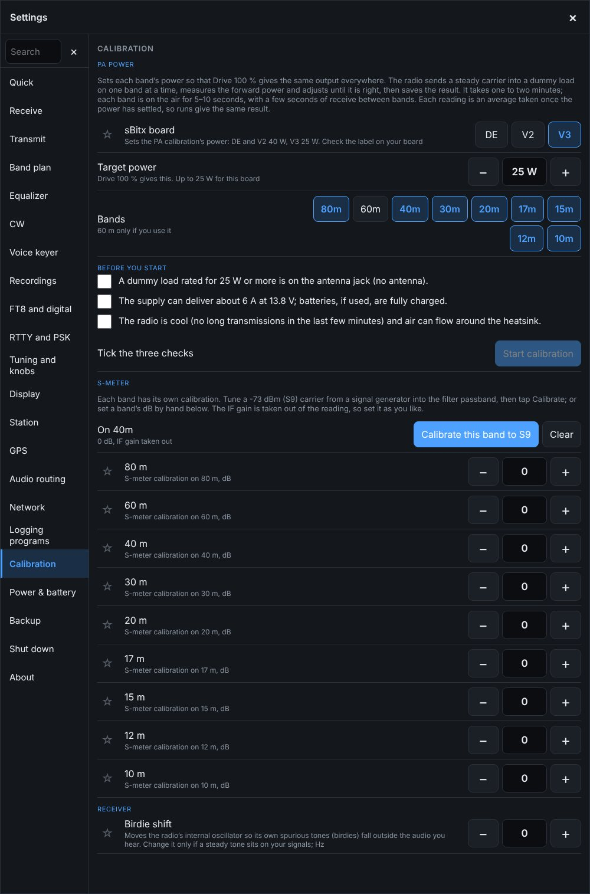

PA power and calibration#
More → Calibration has six sections: PA power, the PA bias (PA_BIAS1), the Power meter (SWR bridge), the Frequency (reference crystal), the S-meter and the Receiver (birdie shift). The LPF sweep is on the Diagnostics page.

PA power calibration#
The PA's gain changes from band to band, so each band has its own power scale. The PA power section of More → Calibration sets them all so that Drive 100 % gives the same power on every band. Run it once on a new radio, after changing the PA or the low-pass filters, and whenever the power on some band looks wrong. Searching the settings for "pa power" finds it too.
You need a dummy load rated for the full power, and a supply that can deliver about 6 A at 13.8 V. An inline wattmeter is useful for checking the result but is not needed: the radio measures with its own SWR bridge.
- sBitx board: DE or V2 (40 W) or V3 (25 W). Check the label on your board. This sets the target and the power limit.
- Target power: the board's rating, or less if you want.
- Bands: all except 60 m are selected; add 60 m if you use it (it calibrates on 5357 kHz).
- Tick the three checks: the dummy load is on the antenna jack, the supply can deliver the current, the radio is cool.
- Tap Start calibration, then Tap again to transmit.
The radio sends a steady carrier on one band at a time. At each step it waits for the power to settle, then averages the forward power over short windows until two in a row agree, and moves the band's scale until the power is within 2.5 % of the target. Each band is on the air for 5–10 seconds, with a few seconds of receive between bands; a whole run takes one to two minutes. The page shows the power, SWR, supply voltage and step live, and each band's old and new scale when it finishes.
- A band whose PA cannot reach the target (often 10–15 m at 40 W) is set to the lowest scale that gives its maximum, and shows PA maximum.
- The run stops on an SWR above 3:1, no measurable power, no readings from the SWR bridge, or battery protection lowering the drive. Stop un-keys at once. The band in progress keeps its old scale; bands already done keep their new one.
- While it runs nothing else can key, tune or change the mode.
- The result is saved with each band's power limit, which the ALC holds the output under. It is part of the backup.
Console: txcal start [W] [bands] (e.g. txcal start 25 40m,20m),
txcal stop, txcal status.
| Setting | Console name | Default | Values | What it does |
|---|---|---|---|---|
| sBitx board | PA_MODEL | V3 | DE, V2, V3 | Sets the PA calibration’s power: DE and V2 40 W, V3 25 W. Check the label on your board |
PA bias adjustment#
More → Calibration → PA bias (PA_BIAS1) guides setting PA_BIAS1 on the sBitx V3 (two IRF510s), which is needed after replacing the MOSFETs. It follows the V3 bias guide, with the radio doing the keying and the measuring.
You need:
- a 50 Ω dummy load (and a power meter, if you have one);
- a 12–13.8 V supply current-limited to 2 A;
- the case open and PA_BIAS1 found, with the heatsink in place.
- Turn PA_BIAS1 fully counter-clockwise (minimum bias), tick the checks and tap Start, then Tap again to transmit.
- The radio keys on 7.035 MHz with no drive at all (the calibration carrier at zero), so the mic and drive settings don't matter and only the bias current flows. After 1.5 s it measures the supply current for 2 s: the baseline.
- Turn PA_BIAS1 slowly clockwise. The page shows the increase over the
baseline live on a 0–350 mA bar with the 150–250 mA target marked:
- under 150 mA it says turn clockwise;
- between 150 and 250 mA it says in range;
- above 250 mA it says turn counter-clockwise now.
- Let it settle a few seconds and tap Done — check it. The radio receives for 5 s, keys again and measures for 3 s. The result shows the baseline, the reading when you finished, and the reading after keying again.
The radio flags a setting outside 150–250 mA, and a change of more than 30 mA between the end of the adjustment and the check (let it settle: a bias that keeps rising with temperature risks thermal runaway). Check that the heatsink is warm, not hot, then run PA health or the PA power calibration.
Adjust again keeps the stored baseline (~/jeSDR/data/diag_bias.base)
for a touch-up without turning the pot back to minimum. PA health also
reports the idle current against this baseline.
It un-keys by itself if:
- the bias goes past 400 mA;
- it has been keyed for 5 minutes;
- any RF output appears (more than 1 W forward).
Without an INA260, put a meter in series with the supply. The radio still keys with no drive (with the same 5-minute limit). Type the two readings in mA (the keyed current with the pot at minimum, and the current now); the page works out the increase and guides you the same way, and Done records them.
The 150–250 mA target is for the V3. For other boards, use their own bias figures.
Console: diag bias, diag bias adjust, diag bias manual, diag bias done
[base_mA now_mA], diag show bias.
Power meter (SWR bridge) calibration#
sBitx boards' SWR bridges differ, so the power the radio shows can read high or low. More → Calibration → Power meter corrects it against an external wattmeter:
- Put a wattmeter and a dummy load on the antenna jack.
- Tap Tune for a steady carrier.
- Type what the wattmeter reads and tap Match.
The radio sets SWR bridge (BRIDGE, 25–400, default 100) so its reading
matches. The forward reading is divided by it, so a higher value reads lower;
you can also set it by hand. Then run the PA power calibration again, since
it measures with this meter. SWR readings don't change (they are a ratio).
Console: bridgecal <W> while TUNE is keyed, or BRIDGE <n>.
| Setting | Console name | Default | Values | What it does |
|---|---|---|---|---|
| SWR bridge | BRIDGE | 100 | 25–400 | Power meter calibration for your board: higher reads lower |
Frequency calibration#
More → Calibration → Frequency (reference crystal) (or search the settings for "frequency"). Needs the antenna; it does not transmit.
It tunes to the time stations WWV/WWVH: all of 2.5, 5, 10, 15, 20 and 25 MHz, or just 5, 10, 15 or 20 MHz. It measures each carrier's offset to a fraction of a hertz from 2.7 seconds of IQ, at two dial settings (which also confirms the direction). The offset divided by the frequency is the reference crystal's error in ppm; the median of the stations heard is used. WWV is usually best on 10–20 MHz by day and 2.5–5 MHz at night.
Apply (console diag freq apply) sets the Si5351's crystal frequency to
match and saves it in hw_settings.ini ([tcxo] cal). It is accepted for 30
minutes after a measurement. The radio's own tuning steps add about 0.1 ppm
of uncertainty, and ionospheric Doppler a little more: run it twice if the
stations disagree.
GPS gives the time, not a frequency, so it can't calibrate the crystal by itself.
Console: diag freq [MHz], diag freq apply, diag show freq.
S-meter calibration#
Each band has its own S-meter calibration. The S-meter takes the IF gain out of its reading, so it reads the same at any IF gain; the Hamlib and TCI S-meters use the same reading.
- Feed a −73 dBm carrier (S9) from a signal generator into the antenna jack and tune it into the filter passband.
- Tap Calibrate this band to S9. That band's calibration is set; Clear zeroes it.
- Repeat on each band you use, or set a band's dB by hand with its − and +.
There is no longer one setting for all bands. A radio that had one
(SMCAL) has it added to each band's calibration the first time the updated
jeSDR starts, so the meter reads the same as before.
Console: smcal s9, smcal clear, smcal <dB> (this band), bare smcal
shows this band's value.
Birdie shift#
Moves the radio's internal oscillator by a few Hz so its own spurious tones fall outside the audio you hear. Change it only if a steady tone sits on your signals.
| Setting | Console name | Default | Values | What it does |
|---|---|---|---|---|
| 80 m | SMCAL80M | 0 | -200–200 | S-meter calibration on 80 m, dB |
| 60 m | SMCAL60M | 0 | -200–200 | S-meter calibration on 60 m, dB |
| 40 m | SMCAL40M | 0 | -200–200 | S-meter calibration on 40 m, dB |
| 30 m | SMCAL30M | 0 | -200–200 | S-meter calibration on 30 m, dB |
| 20 m | SMCAL20M | 0 | -200–200 | S-meter calibration on 20 m, dB |
| 17 m | SMCAL17M | 0 | -200–200 | S-meter calibration on 17 m, dB |
| 15 m | SMCAL15M | 0 | -200–200 | S-meter calibration on 15 m, dB |
| 12 m | SMCAL12M | 0 | -200–200 | S-meter calibration on 12 m, dB |
| 10 m | SMCAL10M | 0 | -200–200 | S-meter calibration on 10 m, dB |
| Birdie shift | BFO | 0 | -3000–3000 | Moves the radio’s internal oscillator so its own spurious tones (birdies) fall outside the audio you hear. Change it only if a steady tone sits on your signals; Hz |